The first version of ABYSSAL was a calculator with a map attached. You brought it evidence, it gave you a distribution. That is the right core, but it is not how anyone works. A search coordinator, a maritime analyst or a duty officer sits in front of a screen for twelve hours and needs to know, continuously, what is moving, what the weather is doing, which satellites will pass overhead, and whether anything just changed. If the tool cannot show them that, they keep it in a background tab and live in something else.
So over the past fortnight I borrowed shamelessly from the tools people do live in: flight radars, ship trackers, earth.nullschool's wind maps, Google Earth, the open-source God's Eye View globe, and the situational-awareness consoles that defence companies build. The result is the Ops console, opened from the rail or with O. Everything in it obeys one rule from the rest of the product: it is context. Nothing in the Ops console changes a belief map. Its tools can open a pre-filled draft for a person to review; that is all.
01What is moving
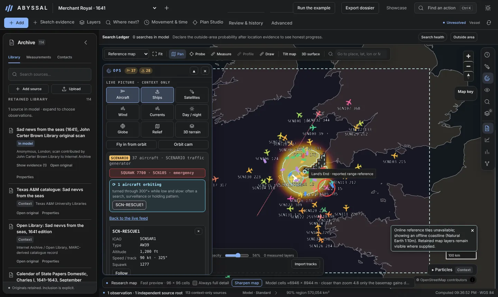
Aircraft arrive from public ADS-B aggregators through the local backend, with a fallback feed. Each is drawn with its heading, altitude band and recent trail, and positions are dead-reckoned between updates so the picture moves smoothly instead of jumping every few seconds.
One small feature here says a lot about how ABYSSAL thinks. An aircraft that turns through more than 300° while low and slow is flagged ⟳ ORBITING. That is the signature of someone searching, surveying or holding. And someone else's search is evidence: if a helicopter has been orbiting a headland for twenty minutes and nothing was reported, that headland is somewhat less likely. One click proposes the orbit as a draft completed search, a disc of the orbit's radius plus an assumed one-kilometre sweep, for a person to confirm with a probability of detection. Negative evidence from a sensor you do not own, made explicit and reviewable.
Ships come from public AIS. A vessel that has been silent for more than fifteen minutes is marked DARK, and around its last position grows a reach ring: the disc it could have covered at its last known speed since it went quiet. The ring can be proposed as a draft area.
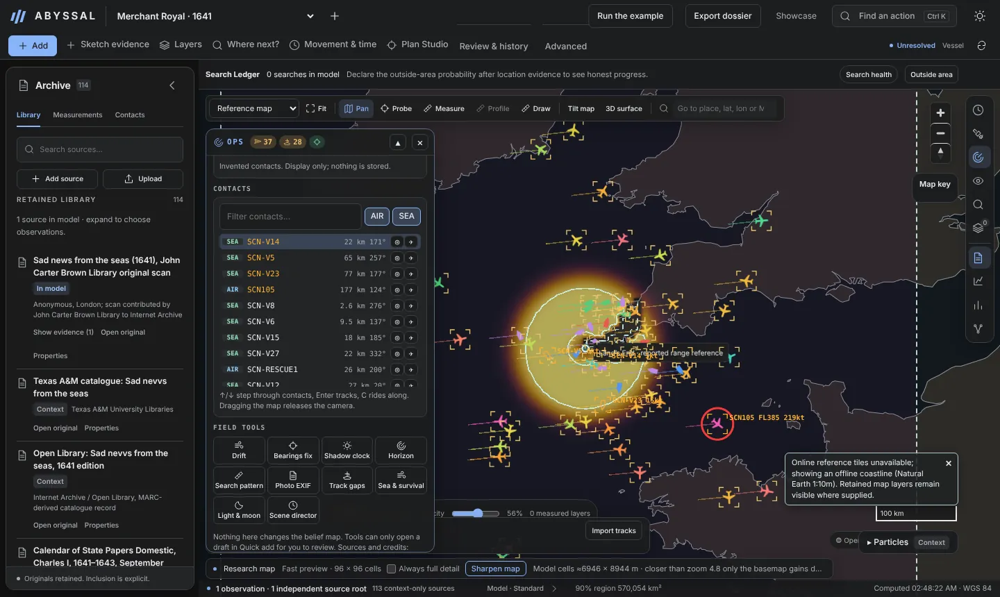
02What is overhead
Satellites are propagated with SGP4, the standard model for public two-line element sets, and drawn with their ground tracks and sensor swaths. A time warp runs from real time to ×300. For the centre of the current view, the console lists the next satellite passes in the coming six hours: when the next radar or optical satellite will be able to see the search area.

There is a story behind those five fictional satellites that I tell in Part 9: the first version shipped with orbital elements under real satellite names that had been typed by hand and failed their checksums. Now ABYSSAL has no built-in real orbits at all. "Fetch real orbits" is an explicit, opt-in request to CelesTrak, one satellite at a time; every element set is checksum- and epoch-age-validated and cached with a receipt; and until that happens, the satellites on screen are labelled as invented.
The Satellite view is the other half of "what is overhead": a strip of the last thirty days of NASA imagery (Sentinel-2 and Landsat at 30 m through NASA's harmonised product, and a daily 250 m overview), with cloud cover and coverage of the current view for each day, a "best clear day" button, and an A/B crossfade between two days. It is the fastest way to answer "was that sandbar there last week?".

03What the world is doing
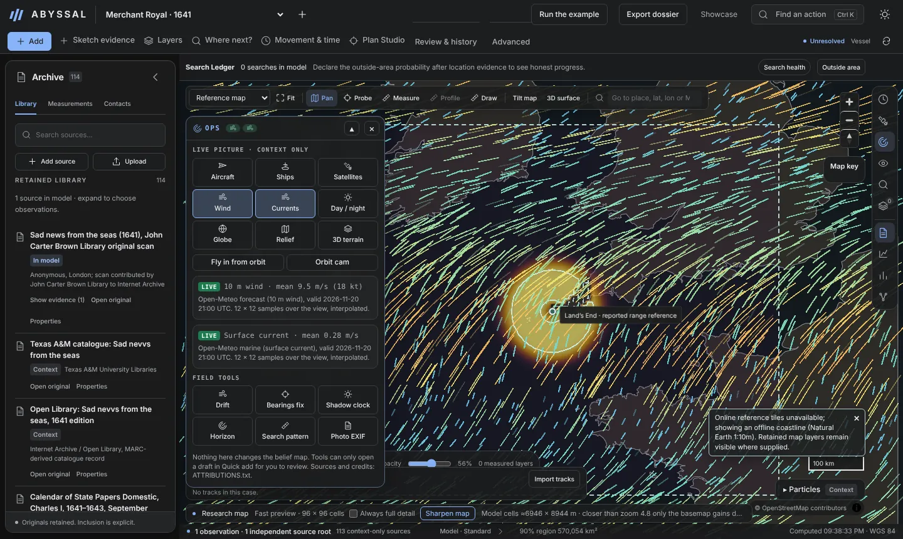
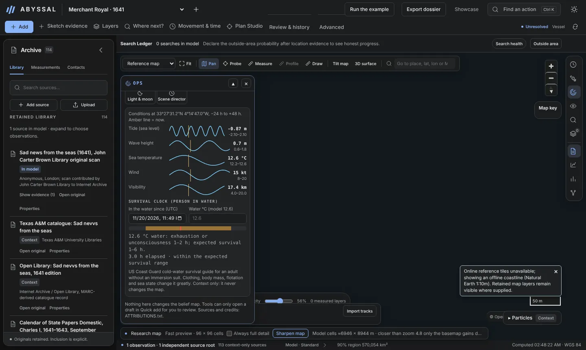
Environmental layers are the ones that change a coordinator's day: wind and surface currents as particle flow; rain radar for the past two hours; earthquakes from the USGS feed, pulsing for three hours after they happen; fires and Earth observation layers from NASA (active fires, sea-surface temperature, night lights, snow); sea and survival conditions with a cold-water survival clock that turns elapsed time into an honest sense of urgency; and light and moon: civil, nautical and astronomical twilight, sunrise and sunset, moonrise and illumination, because whether a night-vision search is worth flying depends on the moon.
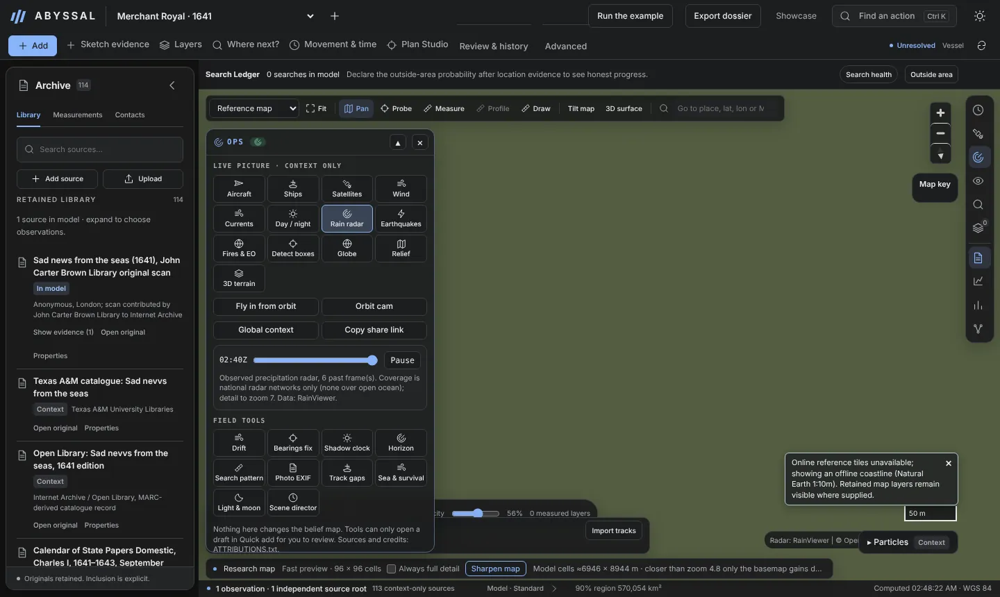
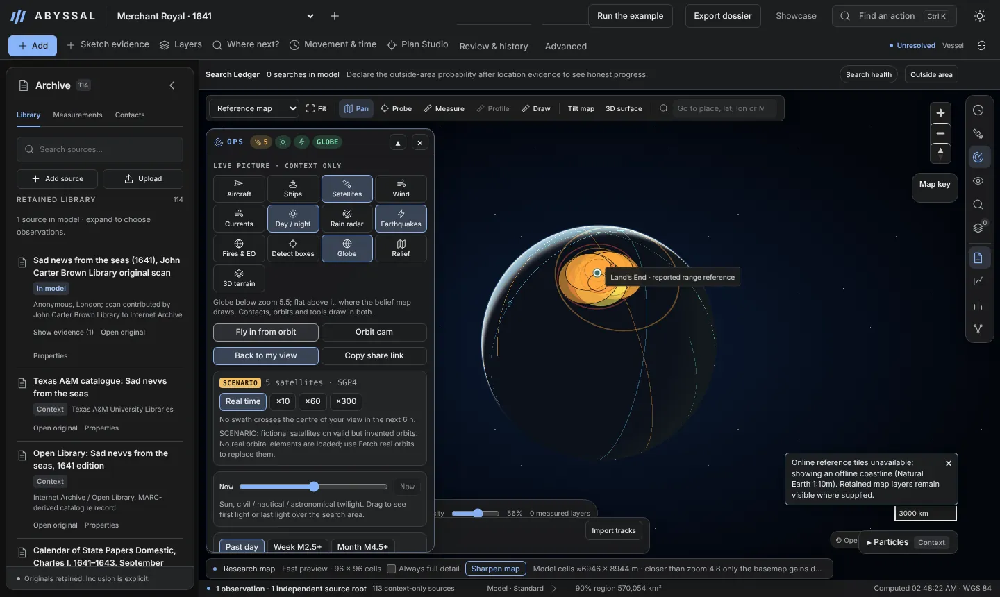
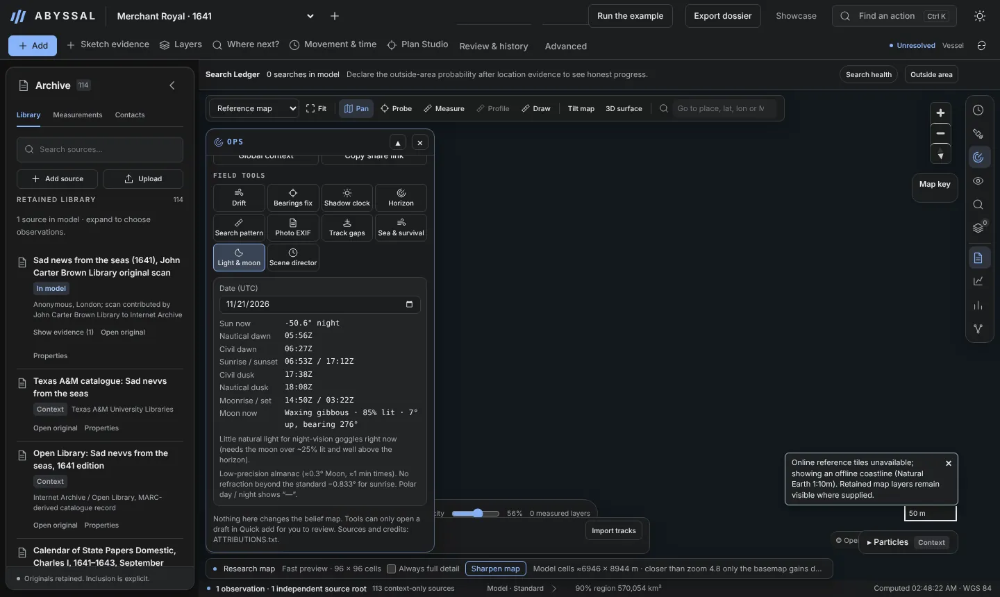
04Field tools
The field tools are small calculators that experienced searchers do on paper, made visual and made to produce drafts instead of numbers on a napkin.
Leeway drift
Something in the water drifts with the current and is pushed by the wind, by an amount that depends on what it is: a person in the water barely catches the wind; a life raft with a canopy catches a lot, and veers left or right of downwind. Click the last known position, choose the object, and ABYSSAL runs a Monte Carlo of 700 particles for up to 72 hours, with leeway coefficients after the classic Allen and Plourde study and randomised left and right divergence. The 90% region can be proposed as a draft area. The tool is open about what it ignores: Stokes drift, the evolution of the wind and current forecast over the drift, and coastline physics beyond stopping where the current field ends.

Bearings-only fix
Three people hear a distress call, or see a flare, and each reports a direction. Each bearing becomes a wedge with its stated uncertainty; their intersection, by Monte Carlo, gives a fix with a 95% ellipse. Two bearings that cross at a shallow angle give a long, thin, honest ellipse rather than a falsely precise point.
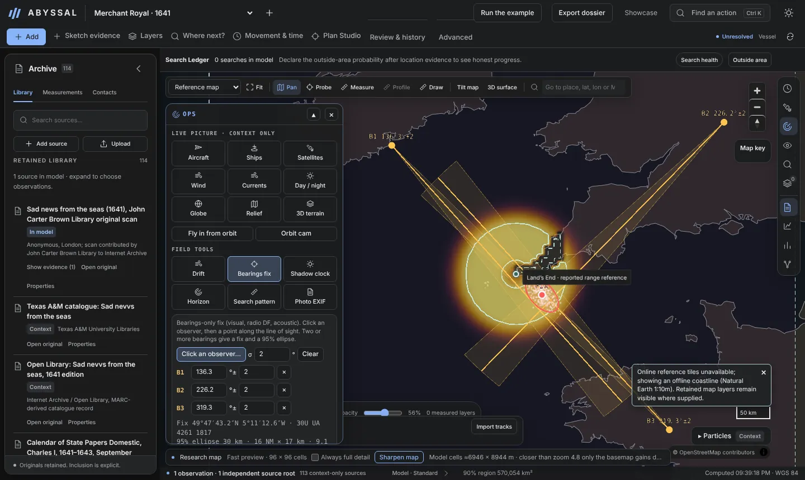
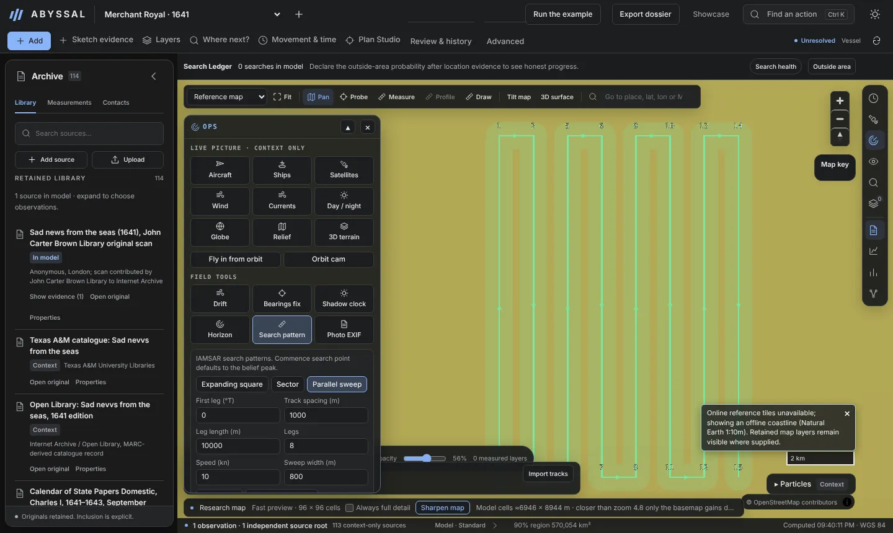
The shadow clock
A photograph shows a pole and its shadow. Where on Earth was it taken? This is chronolocation, a staple of open-source investigation. The ratio of an object's height \(H\) to its shadow length \(S\) gives the sun's elevation, \(\tan e = H/S\). At a given UTC time, every place on Earth where the sun stands at elevation \(e\) lies on a small circle centred on the subsolar point (where the sun is directly overhead) with angular radius \(90^\circ - e\). So one measurement and one timestamp give a circle on the globe; add the shadow's compass direction and the circle collapses to a few candidate places.
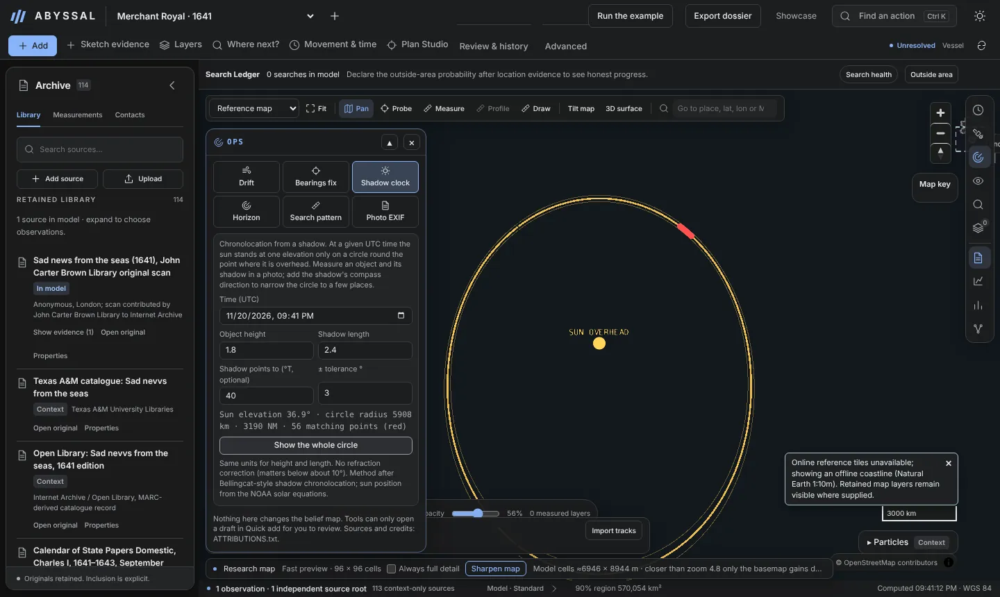
Horizons, MGRS and the rest
The horizon tool draws visual and radar horizon rings for an observer at height \(h\): geometrically \(d = \sqrt{2Rh} \approx 3.57\sqrt{h}\) km for \(h\) in metres, stretched by atmospheric refraction to about \(4.1\sqrt{h}\) for radar. A lookout at 20 m sees about 16 km; a target is only visible if its own horizon ring overlaps. The cursor readout and the go-to box speak MGRS, the grid reference system search and military teams actually use, and the go-to box accepts geo: URIs.
05Where could it have gone while it was dark?
A ship's AIS track goes silent for nine hours, then resumes 140 km away. Where could it have been in between? If its speed is at most \(v\), every point it could have visited satisfies
where \(A\) and \(B\) are the last fix before the gap and the first after it. That is an ellipse with foci at the two fixes, semi-major axis \(a = v\Delta t/2\) and semi-minor axis \(b = \sqrt{a^2 - c^2}\), where \(2c = \lVert A - B\rVert\). If \(\lVert A - B\rVert > v\Delta t\), the ellipse does not exist: the jump is impossible at that speed, which means either the speed cap is wrong or one of the positions is false. That second possibility is how spoofed AIS positions get caught.
Shorten the gap or lower the speed until the jump becomes impossible. ABYSSAL's default speed cap is 1.25 × the track's own 90th-percentile speed outside gaps, an assumption it states, not a fact.
ABYSSAL's Track gaps tool does this for every silent gap in an imported track at once, flags impossible jumps, and proposes any ellipse as a draft area. It ignores land, currents and routing, and says so.
06Many targets at once
Everything above is about one lost thing. A coast guard, a navy or a compliance desk watches hundreds. The watchlist is the first slice of that: twelve invented vessels that have gone dark at different times in the central Mediterranean, and four invented sensors that each get one look.
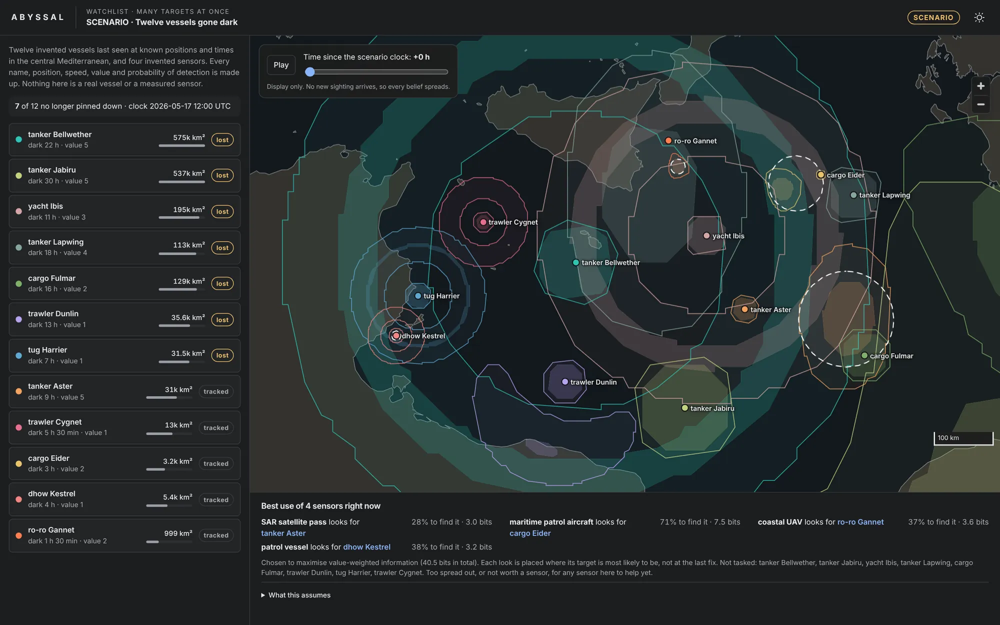
Each target's belief is a mixture: a loiter component (a slow-drifting Gaussian, for a vessel that stopped or is waiting) and a transit ring at its typical speed times the time since its last fix, optionally concentrated around a known course. Outside the maximum-speed radius plus four standard deviations of fix error, the probability is exactly zero, not a small number. Each sensor's look is a footprint with a probability of detection, and its value for a given target is the exact expected information gain in bits:
averaged over the two outcomes, detection and miss. Sensors are then assigned to targets one-to-one by the Hungarian algorithm on value-weighted gain. An uncalibrated sensor with POD zero earns zero gain, as everywhere else in ABYSSAL. And a target spread over half a million square kilometres gets no sensor until something narrows it down, which I think is right, and which the interface explains rather than hides.
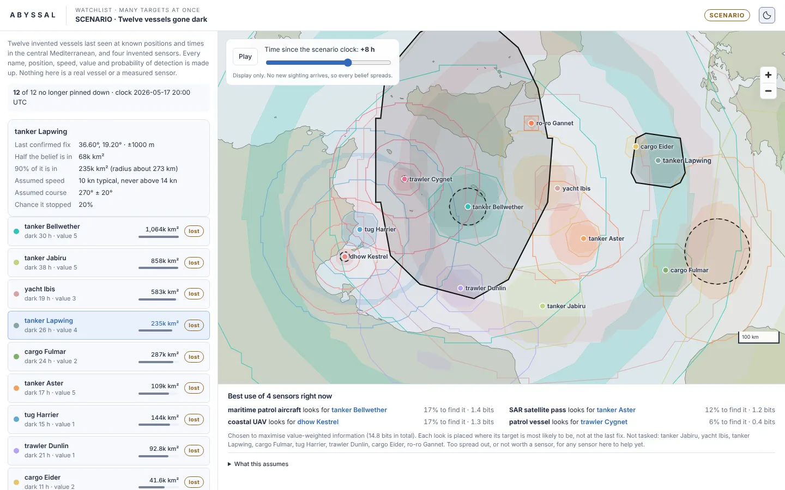
It is a stateless model, not a tracker: it does not fuse new sightings, targets are independent (a convoy would be over-counted), each sensor gets one look with no travel time or weather, and speeds, loiter weights and PODs are analyst assumptions. Only the fictional pack exists in the interface, though the API accepts real targets. Turning it into a proper multi-target tracker, with dark-vessel detections from successive radar passes feeding it, is the next piece of engine work.
07Making it feel like an instrument
None of this is worth much if it stutters. A performance pass measured what a person actually waits for: hovering the map had main-thread stalls of up to 1.3 seconds because the 3D layer was doing a synchronous GPU read on every mouse move (now throttled to 25 Hz and never during a drag); the coastline request on first load took 7.4 seconds cold because of a polygon intersection against continent-sized shapes (now 12 ms with a rectangle clip, about a hundred times faster, and cached by the source file's hash); every panel that needed the posterior recomputed it (now memoised on the exact state, so Search Health after inference fell from 4.1 s to 40 ms). The first JavaScript bundle halved by splitting 31 panels into chunks prefetched in idle time. Keyboard shortcuts cover the common tools (? lists them), share links carry the camera, layers and tracked target, and a scene director records camera shots for briefings.
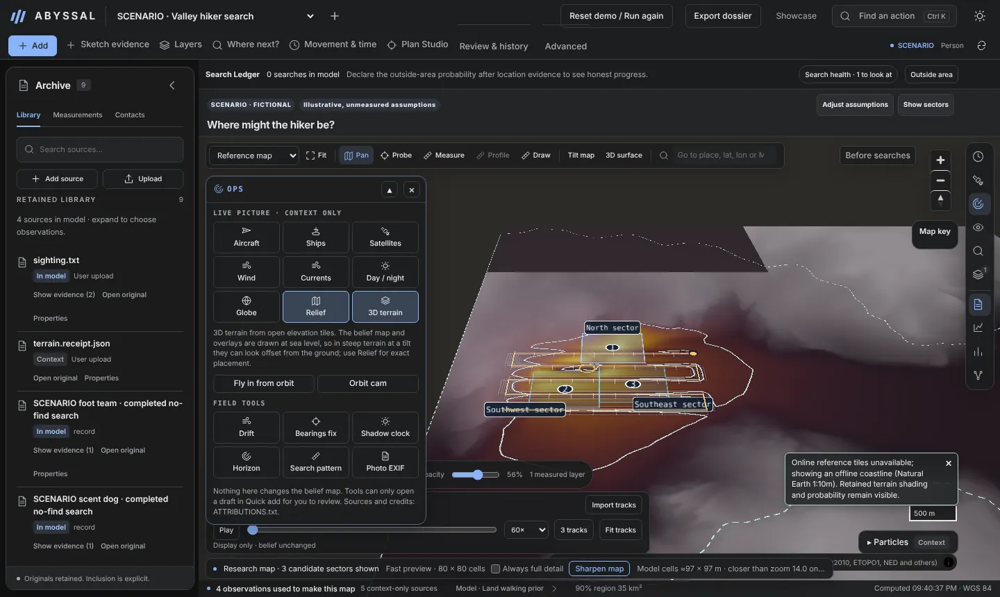
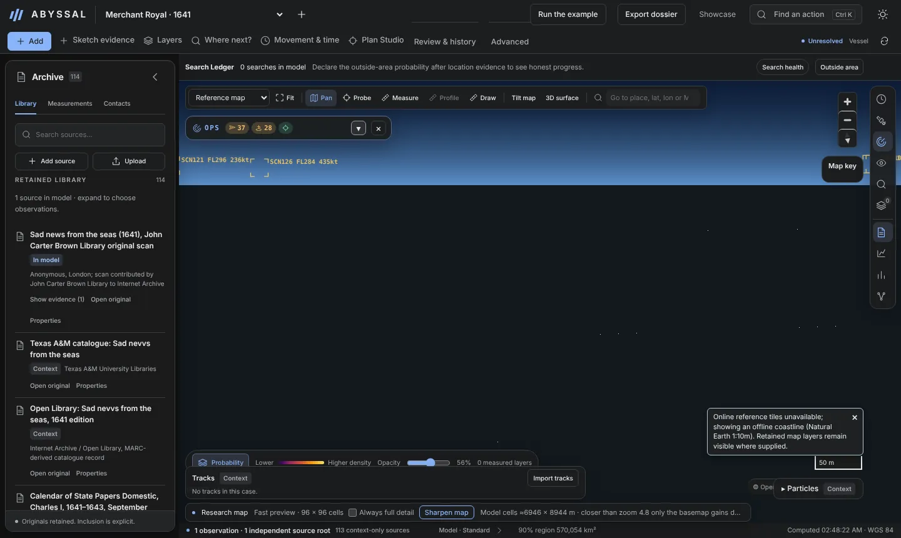
Next, the last part: the rules that keep all of this honest, the mistakes they were written to prevent, and where calibrated probability is worth paying for.